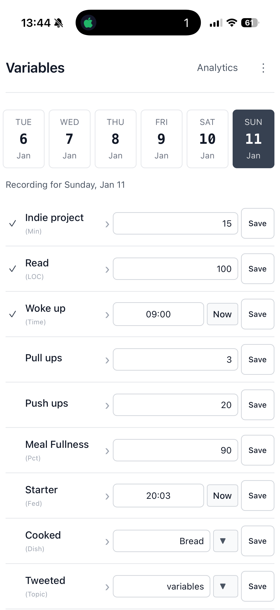

Stop guessing.
Start writing it down.
Most habit trackers ask: "Did you succeed?" This one asks: "What happened?"
Log what's going on in your life. Over time, patterns emerge. You start to notice things you couldn't see before.
No streaks. No guilt. Just data.